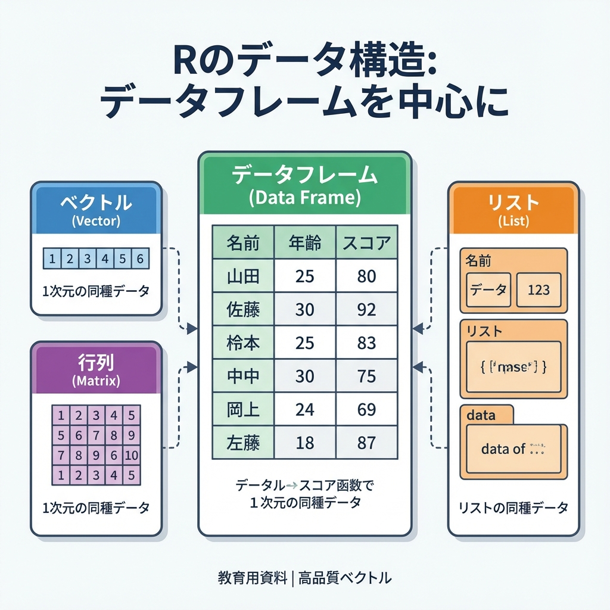
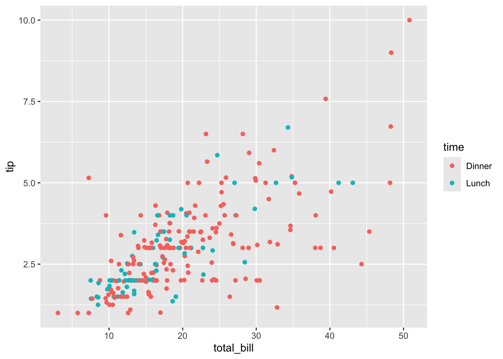

# install.packages("tidyverse") {.unnumbered}第2回 データの構造と扱い

データを「整える」思想
データ分析において、一番時間を食う作業は何でしょうか。複雑な統計モデルの構築ではありません。「データの掃除（Data Wrangling）」です。 形式の揃っていないデータ、謎の空白、表記の揺れ。これらを人間が扱える形に整えるだけで、プロジェクトの時間の8割が消えることすらあります。
本節では、この泥臭い作業をエレガントに片付ける武器、Tidyverse を導入します。
Tidyverse：人間中心のR
Rにも元々データ操作機能（Base R）はありますが、記法が少し特殊で、覚えるのが大変でした。 そこで生まれたのが Tidyverse です。「人間が読みやすく、書きやすい」ことを最優先に設計された、Rの「新しい方言」だと思ってください。
インストール（世界への入り口）：初回のみ
ロード（道具箱を開ける）：起動するたびに必要
library(tidyverse)
これだけで、必要な道具一式（加工、可視化、読み込み…）は揃います。
データフレーム：世界を表にする
現実のデータは、混沌としています。それをコンピュータが理解できる形は、結局「行と列」だけです。 Rでの呼び名は データフレーム。
- 行（Row）：ひとつの観測単位（1人の人間、1回の取引、1日の記録）
- 列（Column）：属性や変数（年齢、金額、気温）
現実をRに取り込む（CSV読み込み）
手元のExcelやCSVファイルは、まだ「外」にあります。これを「中」（Rの計算世界）に引き入れる儀式が read_csv() です。
今回は、Pythonのライブラリ等でもよく使われる tips（レストランのチップ支払い記録）をWebから直接読み込んでみます。
url <- "https://raw.githubusercontent.com/mwaskom/seaborn-data/master/tips.csv"
tips <- read_csv(url)
# データの「顔見せ」（tidyverse版のstr()）
glimpse(tips)
#> Rows: 244
#> Columns: 7
#> $ total_bill <dbl> 16.99, 10.34, 21.01, 23.68, 24.59, 25.29, 8.77, 26.88, 15.0…
#> $ tip <dbl> 1.01, 1.66, 3.50, 3.31, 3.61, 4.71, 2.00, 3.12, 1.96, 3.23,…
#> $ sex <chr> "Female", "Male", "Male", "Male", "Female", "Male", "Male",…
#> $ smoker <chr> "No", "No", "No", "No", "No", "No", "No", "No", "No", "No",…
#> $ day <chr> "Sun", "Sun", "Sun", "Sun", "Sun", "Sun", "Sun", "Sun", "Su…
#> $ time <chr> "Dinner", "Dinner", "Dinner", "Dinner", "Dinner", "Dinner",…
#> $ size <dbl> 2, 3, 3, 2, 4, 4, 2, 4, 2, 2, 2, 4, 2, 4, 2, 2, 3, 3, 3, 3,…読み込んだ瞬間、変数の型（数値なのか、文字なのか）は自動判定されます。Excelによくある「数字なのに文字扱い」みたいなトラブルも、入り口で防げます。
[要一次情報: データセットの詳細な定義書の所在]
データ操作の文法 (dplyr)
Tidyverseの中核である dplyr パッケージは、データを加工するための「5つの動詞」を提供します。 これらはプログラミングの命令というより、英語の文法に近い感覚です。
パイプ演算子 %>%：考えた順に書く
まず、Tidyverseの象徴である パイプ演算子 %>%（または |>）を概観します。これは「左から右へ、水を流す」イメージです。
- Base R:
head(select(tips, total_bill))→ 内側から外側へ読む（直感的じゃない） - Tidyverse:
tips %>% select(total_bill) %>% head()→ 「データを、選んで、先頭を見る」（考えた順）
1. 切り分ける：select() と filter()
分析はまず、要らない部分を削ぎ落とすことから始まります。
列（変数）を選ぶ：select() 「分析に性別と喫煙情報は関係ない」なら、こう。
tips %>%
select(total_bill, tip) %>%
head()行（観測）を絞る：filter() 「ディナーの客だけ見たい」なら、こう。
tips %>%
filter(time == "Dinner") %>%
head()2. 加工する：mutate()
既存の列を使って新しい指標を作るときは mutate()（変化させる）を使います。 「チップの額」そのものより、「支払額に対するチップの割合」の方が意味があるでしょう。
tips %>%
mutate(tip_rate = tip / total_bill) %>%
select(total_bill, tip, tip_rate) %>%
head()3. 並べる：arrange()
データは最初、「記録順」です。これを「意味のある順」に変えます。
# チップを多く払った順（降順）に並べる
tips %>%
arrange(desc(tip)) %>%
head()4. 要約する：group_by() と summarize()
個別の値より「傾向」が知りたいなら、データをグループにまとめて（group_by）、縮約（summarize）します。 「ランチとディナー、どっちが羽振りがいいのか？」という問いに答えてみましょう。
tips %>%
group_by(time) %>%
summarize(
平均支払額 = mean(total_bill),
平均チップ = mean(tip),
データ数 = n()
)ストーリーで書く
これらの「動詞」と「パイプ」を組み合わせれば、複雑なデータ処理も一つのストーリーとして記述できます。
問い：土曜日のディナーに来た客のうち、特にチップを弾んでくれた（総額の20%以上）のはどんな人たちか？支払額が高い順に見たい。
この思考プロセスをそのままコードにします。
tips %>%
filter(day == "Sat" & time == "Dinner") %>% # 土曜日のディナー客で
mutate(rate = tip / total_bill) %>% # チップ率を計算し
filter(rate >= 0.2) %>% # 20%以上に絞り込み
arrange(desc(total_bill)) %>% # 支払額が高い順に並べる
select(sex, size, total_bill, tip, rate) # 必要な情報だけ見るこの「読みやすさ」こそ、私たちがTidyverseを選ぶ理由です。数ヶ月後の自分が見ても、「何がしたかったか」一目で分かります。
データ操作の補足事項
列の選び方
Rには方言があります。
tips$total_bill：ベクトルとして取り出す（Base R）。計算式の内部で使うことが多い。tips %>% select(total_bill)：データフレームとして取り出す（Tidyverse）。データを加工し続ける時に使う。 使い分けですが、パイプラインの中ではselectでOKです。
データのチラ見（可視化）
数字だけだと見逃します。ggplot2 でサッと可視化する癖をつけてください。
ggplot(tips, aes(x = total_bill, y = tip, color = time)) +
geom_point()
課題
自分でストーリーを作ってみましょう。
dayが “Sun”（日曜日）である行のみを抽出する（filter）。- 抽出したデータから、
total_billとsizeの2列のみを選択して表示する（select）。
練習問題
正解かどうかより、「コードが思考の流れを表しているか」を意識してください。
練習1: 基礎確認
glimpse() や dim() を使い、このデータセットが「何行何列」で、「変数の型は何か」を言葉で説明してください。
練習2: 仮説の検証
「女性客の方がチップ率が高いのではないか？」という仮説を検証するコードを書いてください。（ヒント：filterで女性を抽出し、mutateで率を計算し、summarizeで平均を出す、など方法は幾通りもあります）
練習3: パイプラインの構築
以下の処理をひとつのパイプラインで書いてみてください。
- 土曜日 (
Sat) のデータを抽出。 - チップ率を計算し、新しい列として追加。
- そのチップ率が高い順（降順）に並べ替え。
- 上位5件を表示。